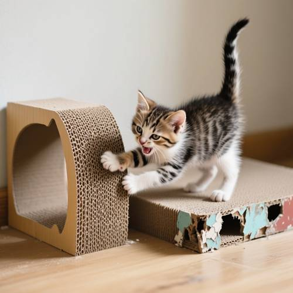
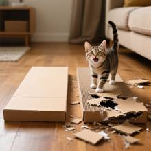
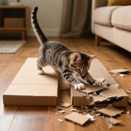

Relationship — There are two cat scratching boards in the picture, one is brand new a
There are two cat scratching boards in the picture, one is brand new and the other is dilapidated. A kitten is scratching the latter excitedly, its tail cocked high.

Direct — one call, no iterationContinuum — Kimi K3 + Qwen-Image
Judge — Direct
PASSRelationship - Comparison — The image contains two cardboard cat scratching boards. One, on the left, is an arch-shaped scratcher that appears intact and new. The other, on the right, is a flat block-shaped scratcher that is visibly torn and frayed along its edge, showing wear and tear. This accurately depicts the comparison between a 'brand new' and a 'dilapidated' board.
PASSAction - Animal — There is a small kitten in the image with its dark, striped tail held high and curved. The kitten's body is in an active pose, with its front paws extended towards a scratching board and its mouth open. One paw is raised and appears to be clawing at the surface, which corresponds to the action of scratching.
FAILGrammar - Pronoun Reference — The prompt states that the kitten is scratching 'the latter' of the two boards, which refers to the dilapidated one. In the image, while the kitten is standing on the dilapidated board on the right, it is actively scratching the new board on the left. Therefore, the image does not correctly depict the pronoun reference.
Judge — Continuum
PASSRelationship - Comparison — The image displays two rectangular cardboard cat scratching boards side-by-side on a wooden floor. The board on the left is smooth and intact, appearing brand new. The board on the right is heavily torn and shredded, with pieces of cardboard scattered around it, clearly showing it is dilapidated.
PASSAction - Animal — A tabby kitten is depicted with its body lowered and front paws extended onto one of the scratching boards. Its claws are visible and engaged with the cardboard, indicating the action of scratching. The kitten's tail is raised vertically into the air.
PASSGrammar - Pronoun Reference — The prompt specifies the kitten is scratching 'the latter' of the two boards (the dilapidated one). The image correctly portrays this, as the kitten is actively scratching the torn-up board on the right, while the brand new board on the left remains untouched.
What the agent did
Thinking
Let me analyze the prompt: "There are two cat scratching boards in the picture, one is brand new and the other is dilapidated. A kitten is scratching the latter excitedly, its tail cocked high." Key elements: 1. Two cat scratching boards (cardboard scratchers typically) 2. One brand new (pristine, clean) 3. One dilapidated (shredded, torn, worn out, cardboard bits) 4. A kitten scratching the dilapidated one excitedly 5. Kitten's tail cocked high This is a humorous scene — cats famously ignore the new scratcher and keep using the destroyed old one. I need to use qwen-image for generation. Let me generate the image first. Let me write a detailed visual prompt: "A cozy indoor scene with two cardboard cat scratching boards side by side on a wooden floor. One scratching board is brand new — pristine, clean, intact cardboard with crisp edges, untouched. The other scratching board is dilapidated — shredded, torn, frayed cardboard with scattered bits and pieces around it. A cute small kitten is excitedly scratching the dilapidated board with its front paws, tail held straight up high in the air. Warm home lighting, photorealistic." Let me generate this. Size fixed by harness, so default width/height... The policy says "Do not set a seed. Sizes and seeds are controlled by the harness." So I'll just call generate_image with prompt and model qwen-image. Let me do it.
Model
I'll generate this scene — the classic cat-owner joke: a pristine new scratching board ignored while the kitten gleefully shreds the destroyed old one.
Step 1 — `generate_image`
{
"prompt": "A cozy living-room scene with two rectangular corrugated-cardboard cat scratching boards lying side by side on a wooden floor. The scratching board on the left is brand new: pristine, clean, intact cardboard with crisp straight edges and an untouched smooth surface. The scratching board on the right is dilapidated: heavily shredded, torn and frayed corrugated cardboard with ragged holes, flaking layers and scattered cardboard shreds all around it. A small cute tabby kitten stands on the dilapidated board, excitedly scratching it with both front paws, tail cocked straight up high in the air, eyes bright with excitement. Warm soft home lighting, photorealistic, high detail.",
"model": "qwen-image"
}
Result img_0

Thinking
Let me analyze the result: - Two scratching boards: Yes, there are two boards side by side on a wooden floor. - Brand new one: The left one is pristine, clean, intact. ✓ - Dilapidated one: The right one is shredded, torn, with holes and scattered cardboard bits. ✓ - Kitten scratching the dilapidated one: The kitten is standing ON the dilapidated board, but it's facing the camera with mouth open (excited expression), not actively scratching. Its paws are on the board but it's not in a scratching pose. - Tail cocked high: Yes, tail is up high. ✓ The main issue: the kitten isn't actively scratching — it's standing and looking at the camera. The prompt says "scratching the latter excitedly". The kitten looks excited (mouth open, bright eyes) but the pose is standing/walking toward camera rather than scratching. The scene is otherwise very good. The composition, the contrast between the two boards, the scattered shreds — all great. Should I edit to make the kitten actually scratch? The edit would be: "make the kitten actively scratching the board with its front paws, head lowered toward the board". But this risks changing other good aspects. Let me try an edit: "The kitten lowers its head and vigorously scratches the torn cardboard board with both front paws, claws digging into the shredded surface, still keeping its tail cocked straight up high." Actually, per the editing discipline: describe only the change. Let me do that. I'll mark img_0 as best first since it's already quite good, then attempt the edit. Let me mark img_0 first, then edit.
Step 2 — `mark_best`
{
"image": "img_0",
"reason": "All key elements present: two scratching boards (one pristine, one shredded), kitten on the dilapidated one with tail cocked high and excited expression. Only flaw: kitten is standing/posing rather than actively scratching."
}
Thinking
Now let me edit to make the kitten actively scratch. The change: kitten should be in a scratching pose — front paws on the board, claws working the cardboard, head lowered toward its paws. Keep tail high.
Step 3 — `edit_image`
{
"image": "img_0",
"prompt": "Change the kitten's pose: it leans forward with head lowered toward the torn cardboard, vigorously scratching the shredded board with both extended front paws, claws digging into the ragged cardboard surface, body angled away from the camera toward the board. Keep its tail cocked straight up high and its excited expression.",
"model": null
}
Result img_1

Thinking
The edit worked well. Now the kitten is: - Leaning forward with head lowered toward the board ✓ - Vigorously scratching with both extended front paws ✓ (claws on the torn cardboard) - Tail cocked straight up high ✓ - Body angled away from camera toward the board ✓ The two boards: - Left: pristine, brand new ✓ - Right: dilapidated, shredded, torn with holes and scattered shreds ✓ The kitten is scratching the dilapidated one. ✓ Wait — one small detail: the kitten's hind legs are standing on the NEW board (left) while its front paws scratch the OLD board (right). It's straddling both boards. Is that a problem? The prompt says "A kitten is scratching the latter excitedly" — it is scratching the dilapidated one. The fact that its rear feet are on the new board is a minor compositional quirk, actually quite natural and funny. The kitten is clearly scratching the dilapidated board. Everything looks good. Let me zoom in to check details — maybe the kitten's face/paws to check for artifacts. Let me inspect the kitten region quickly. Actually, let me check the paws and face for artifacts since those are common problem areas.
Model
The edit worked — the kitten now leans forward, head down, both front paws raking the torn cardboard, tail straight up. Let me verify the fine details (paws, face) at full resolution before finalizing.
The close-up looks great: - The kitten's face is clean, eyes focused on the board, excited/intent expression - Both front paws extended with claws digging into the torn cardboard ✓ - Paws look anatomically correct - The corrugated cardboard texture is detailed and realistic - Torn/shredded surface clearly visible Everything is correct. The image fulfills all requirements: 1. Two cat scratching boards ✓ 2. One brand new ✓ 3. One dilapidated ✓ 4. Kitten scratching the dilapidated one excitedly ✓ 5. Tail cocked high ✓ Mark img_1 as best and stop.
Step 5 — `mark_best`
{
"image": "img_1",
"reason": "Complete match: two scratching boards side by side \u2014 left one brand new and pristine, right one dilapidated with torn holes and scattered shreds \u2014 and the kitten actively scratching the dilapidated board with both front paws, claws in the cardboard, tail cocked straight up high. Details verified clean at full resolution."
}
Thinking
The run is complete. Let me summarize for the user.
Model
Done! The final image captures the scene perfectly — and the classic cat-owner irony: - **Two scratching boards side by side** on a wooden living-room floor - **Left board: brand new** — pristine, smooth, untouched cardboard with crisp edges - **Right board: dilapidated** — shredded corrugated surface with ragged holes, flaking layers, and cardboard debris scattered everywhere - **The kitten** is stretched across the wrecked board, head lowered and eyes locked on its work, **both front paws raking the torn cardboard** with claws dug in — mid-scratch and clearly thrilled - **Tail cocked straight up** in the air, the universal sign of a very pleased cat Naturally, the expensive new board sits two inches away, completely ignored.